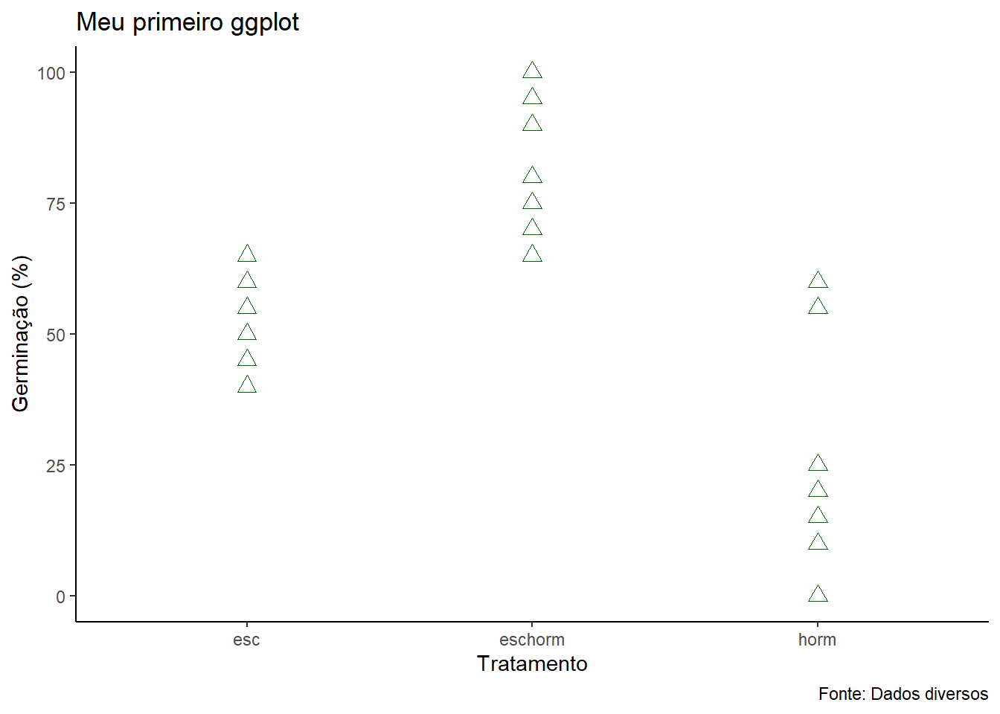
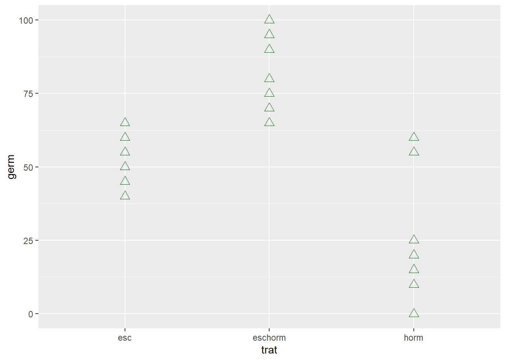
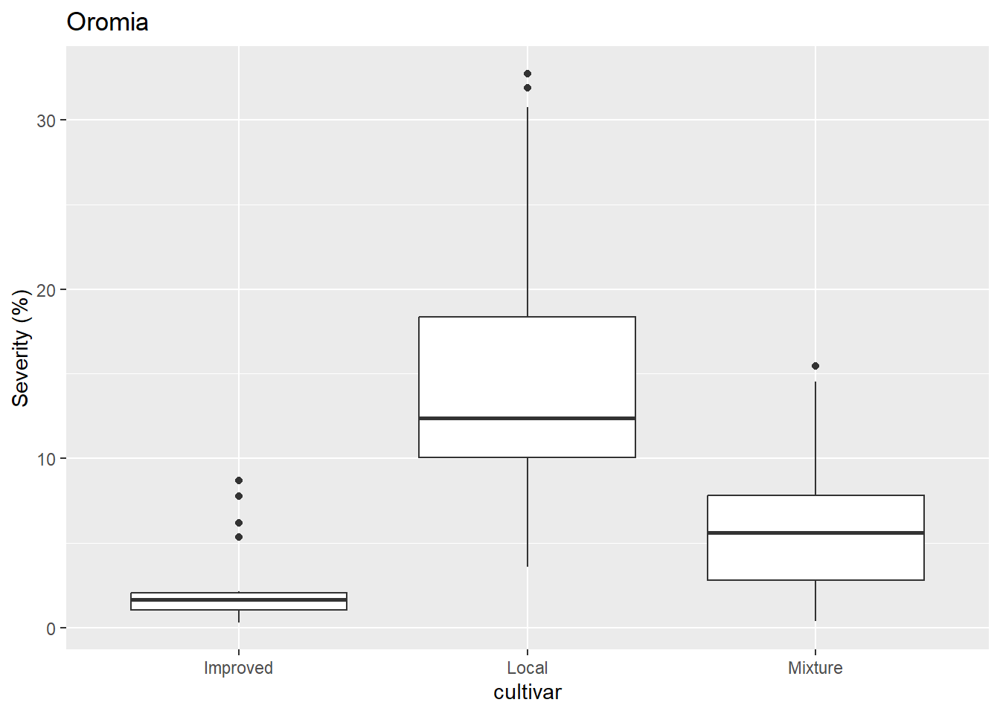
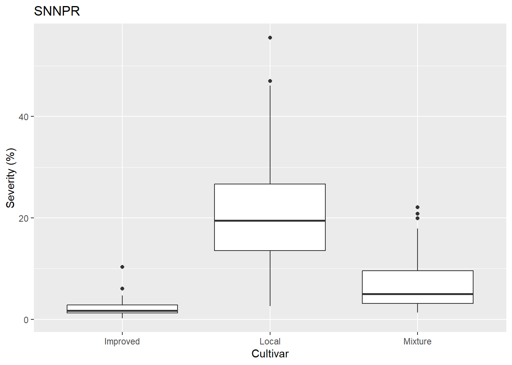
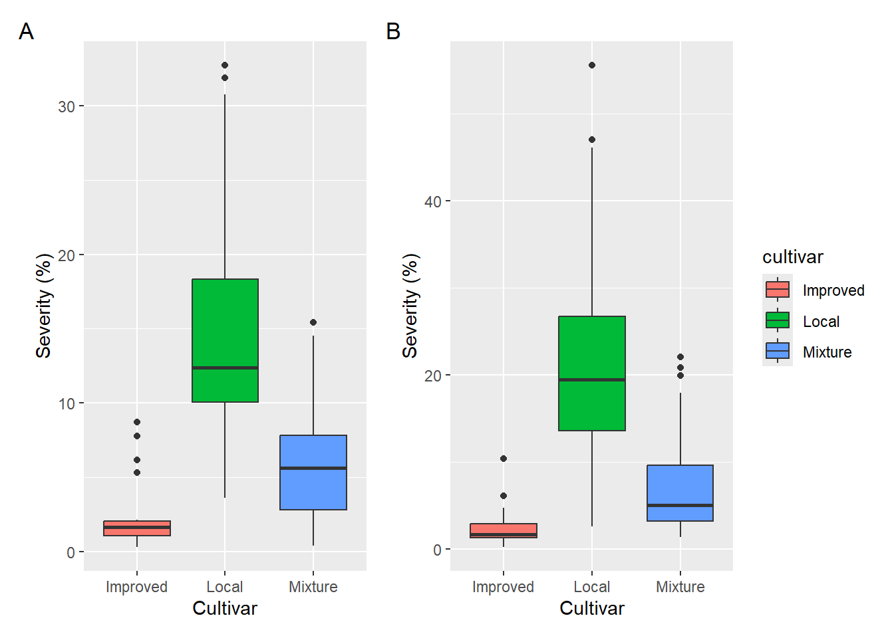
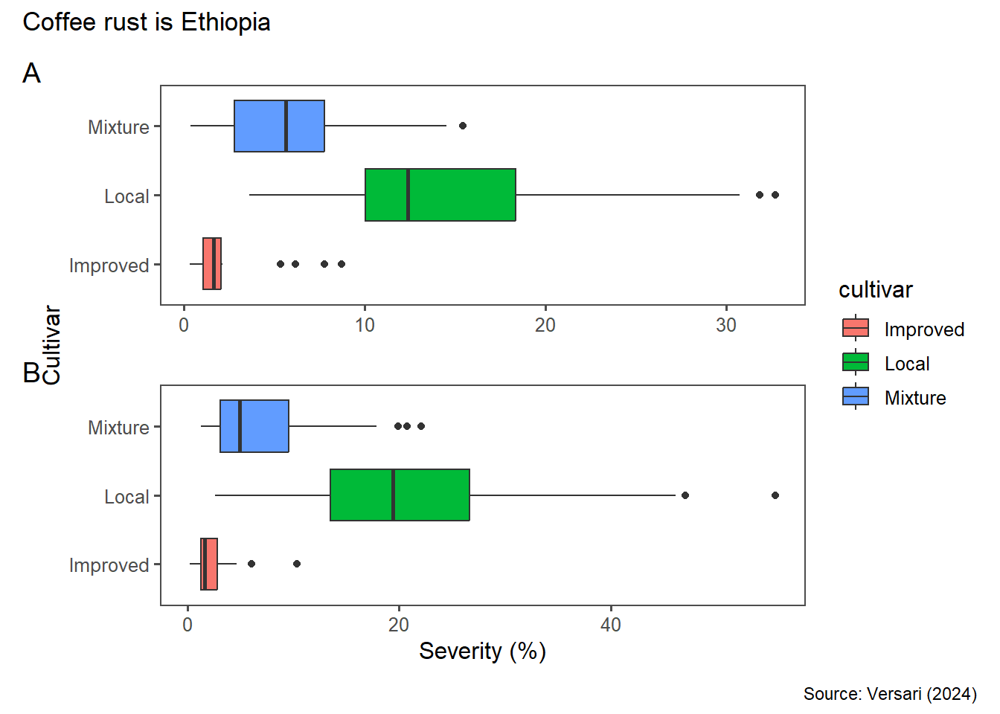
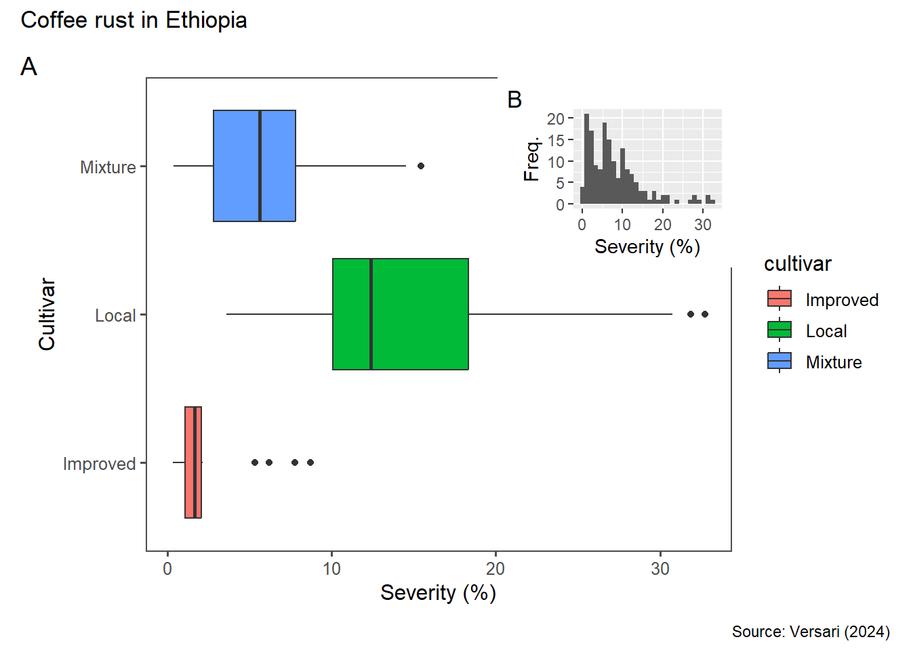
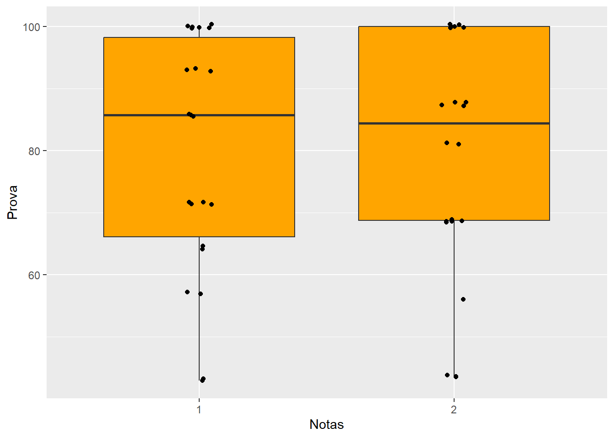
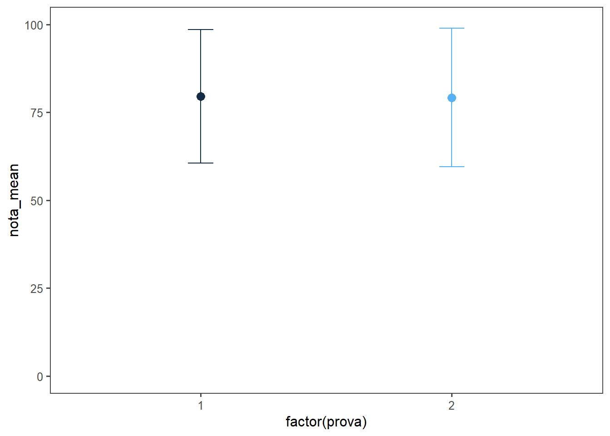

library(gsheet)
df4 <- gsheet2tbl("https://docs.google.com/spreadsheets/d/1bq2N19DcZdtax2fQW9OHSGMR0X2__Z9T/edit?gid=1423156564#gid=1423156564") 1. ggplot
Vamos utilizar o ggplot2 para poder fazer um gráfico para análise exploratória das variáveis. Com o geom_point mostra os pontos dentro da mesma variável, mas estes podem estar sobrepostos, para isso utilizamos o geom_jitter para poder desagregar os pontos dentro e observar melhor os dados.
Pode adicionar camadas também, quando coloca (+) outro parâmetro como o ´geom_boxplot`. A ordem altera como a camada será exposta, se ela ficará acima ou abaixo. O primeiro a ser chamado ficará na camada mais abaixo a próxima ficara acima desta, a próxima que for criada ficara acima das demais e assim por diante.
Para não duplicar o outlier, podemos tirar o outlier com outlier.colour = NA.
Podemos utilizar temas, para atender a um jornal específico, como g2 + theme_bw(), o tema fica preto e branco algo mais clean e científico. Tem outros como o theme_classic.
1.2 Carregar conjuntos de dados
1.3 Gráfico BOXPLOT
library(ggplot2)
g1 <- df4 |>
ggplot(aes(trat, germ))+
geom_point(color = "darkgreen", shape = 2, size = 3)
g1 + theme_classic()+
labs(x = "Tratamento",
y = "Germinação (%)",
title = "Meu primeiro ggplot",
caption = "Fonte: Dados diversos")
g2 <- df4 |>
ggplot(aes(trat, comp))+
geom_boxplot(outlier.colour = NA,
fill = "orange")+
geom_jitter(width = 0.05,
color = "darkblue",
shape = 3,
size = 2)
# Verificar o gráfico
print(g1)
# Salvar o gráfico
ggsave("plott1.png", plot = g1, bg = "white")2 Gráfico BOXPLOT (2)
2.1 Carregando conjunto de dados
library(tidyverse)
cr <- read_csv("https://raw.githubusercontent.com/emdelponte/paper-coffee-rust-Ethiopia/master/data/survey_clean.csv")A tabela importada foi:
head(cr)# A tibble: 6 × 13
farm region zone district lon lat altitude cultivar shade
<dbl> <chr> <chr> <chr> <dbl> <dbl> <dbl> <chr> <chr>
1 1 SNNPR Bench Maji Debub Bench 35.4 6.90 1100 Local Sun
2 2 SNNPR Bench Maji Debub Bench 35.4 6.90 1342 Mixture Mid shade
3 3 SNNPR Bench Maji Debub Bench 35.4 6.90 1434 Mixture Mid shade
4 4 SNNPR Bench Maji Debub Bench 35.4 6.90 1100 Local Sun
5 5 SNNPR Bench Maji Debub Bench 35.4 6.90 1400 Local Sun
6 6 SNNPR Bench Maji Debub Bench 35.4 6.90 1342 Mixture Mid shade
# ℹ 4 more variables: cropping_system <chr>, farm_management <chr>, inc <dbl>,
# sev2 <dbl>Para visualizar o conjunto de dados pode-se utilizar a função “glimpse” que mostra os detalhes da tabela e das váriaveis.
glimpse(cr)Rows: 405
Columns: 13
$ farm <dbl> 1, 2, 3, 4, 5, 6, 7, 8, 9, 10, 11, 12, 13, 14, 15, 16,…
$ region <chr> "SNNPR", "SNNPR", "SNNPR", "SNNPR", "SNNPR", "SNNPR", …
$ zone <chr> "Bench Maji", "Bench Maji", "Bench Maji", "Bench Maji"…
$ district <chr> "Debub Bench", "Debub Bench", "Debub Bench", "Debub Be…
$ lon <dbl> 35.44250, 35.44250, 35.42861, 35.42861, 35.42861, 35.3…
$ lat <dbl> 6.904722, 6.904722, 6.904444, 6.904444, 6.904444, 6.90…
$ altitude <dbl> 1100, 1342, 1434, 1100, 1400, 1342, 1432, 1100, 1400, …
$ cultivar <chr> "Local", "Mixture", "Mixture", "Local", "Local", "Mixt…
$ shade <chr> "Sun", "Mid shade", "Mid shade", "Sun", "Sun", "Mid sh…
$ cropping_system <chr> "Plantation", "Plantation", "Plantation", "Plantation"…
$ farm_management <chr> "Unmanaged", "Minimal", "Minimal", "Unmanaged", "Unman…
$ inc <dbl> 86.70805, 51.34354, 43.20000, 76.70805, 47.15808, 51.3…
$ sev2 <dbl> 55.57986, 17.90349, 8.25120, 46.10154, 12.25167, 19.91…2.1.1 Criação de subconjunto
2.1.2 Seleção e Filtro
Podemos selecionar as colunas com a função select() e podemos tribuir a um subconjunto (Ex.: cr2).
cr2 <- cr |>
select(farm, region, cultivar, sev2) #select é pra colunas
cr2# A tibble: 405 × 4
farm region cultivar sev2
<dbl> <chr> <chr> <dbl>
1 1 SNNPR Local 55.6
2 2 SNNPR Mixture 17.9
3 3 SNNPR Mixture 8.25
4 4 SNNPR Local 46.1
5 5 SNNPR Local 12.3
6 6 SNNPR Mixture 19.9
7 7 SNNPR Mixture 11.9
8 8 SNNPR Local 55.6
9 9 SNNPR Local 11.6
10 10 SNNPR Mixture 11.4
# ℹ 395 more rowsPodemos também, filtrar os dados usando o filter() do pacote dplyr para selecionar colunas e linhas em conjunto com a função select().
#Filtra Oromia
cr_oromia <- cr |>
select(farm, region, cultivar, sev2) |> #select é pra colunas
filter(region == "Oromia")
cr_oromia# A tibble: 165 × 4
farm region cultivar sev2
<dbl> <chr> <chr> <dbl>
1 286 Oromia Mixture 7.63
2 287 Oromia Mixture 9.39
3 288 Oromia Mixture 1.30
4 289 Oromia Mixture 9.79
5 290 Oromia Local 18.5
6 291 Oromia Mixture 13.2
7 292 Oromia Mixture 5.60
8 293 Oromia Mixture 1.06
9 294 Oromia Local 17.6
10 295 Oromia Mixture 15.4
# ℹ 155 more rows#Filtra SNNPR
cr_pr <- cr |>
select(farm, region, cultivar, sev2) |>#select é pra colunas
filter(region == "SNNPR")
cr_pr# A tibble: 240 × 4
farm region cultivar sev2
<dbl> <chr> <chr> <dbl>
1 1 SNNPR Local 55.6
2 2 SNNPR Mixture 17.9
3 3 SNNPR Mixture 8.25
4 4 SNNPR Local 46.1
5 5 SNNPR Local 12.3
6 6 SNNPR Mixture 19.9
7 7 SNNPR Mixture 11.9
8 8 SNNPR Local 55.6
9 9 SNNPR Local 11.6
10 10 SNNPR Mixture 11.4
# ℹ 230 more rows2.2 Gráficos ggplot BOXPLOT para cada subconjunto
cr_oromia |>
ggplot(aes(x = cultivar,
y = sev2))+
geom_boxplot()+
labs(title = "Oromia",
X = "Cultivar",
y = "Severity (%)")
cr_pr |>
ggplot(aes(x = cultivar,
y = sev2))+
geom_boxplot()+
labs(title = "SNNPR",
x = "Cultivar",
y = "Severity (%)")
Agora, utilizando a biblioteca “patchwork” iremos plotar os dois gráficos lado a lado, sem usar o face_wrap.
p1 <- cr_oromia |>
ggplot(aes(x = cultivar,
y = sev2,
fill = cultivar))+
geom_boxplot()+
labs(x = "Cultivar",
y = "Severity (%)")#+ #lembrar de tirar o comentário do +
#coord_flip() #rotaciona as coordenadas
p2 <- cr_pr |>
ggplot(aes(x = cultivar,
y = sev2,
fill = cultivar))+
geom_boxplot()+
labs(x = "Cultivar",
y = "Severity (%)")#+ #lembrar de tirar o comentário do +
#coord_flip() #rotaciona as coordenadas
#Não consegui instalar o patchwork
library(patchwork)
(p1 + p2) + #pode ser + ou |, se colocar / coloca um sobre o outro. Ele funciona como equação, pode ser feito combinação dos gráficos como p1/(p2+p1)
plot_layout(guides = "collect") + #Deixa somente uma legenda
plot_annotation(tag_levels = "A") #diferencia maiúsculas e minúsculas
ggsave("patch.png")O patchwork tem várias possíbilidades interessantes, vale a pena olhar o help dele depois.
library(ggthemes)
p1 <- cr_oromia |>
ggplot(aes(x = cultivar,
y = sev2,
fill = cultivar))+
geom_boxplot()+
theme_few() +
labs(x = "Cultivar",
y = "Severity (%)")+
coord_flip() #rotaciona as coordenadas
p2 <- cr_pr |>
ggplot(aes(x = cultivar,
y = sev2,
fill = cultivar))+
geom_boxplot()+
theme_few() +
labs(x = "Cultivar",
y = "Severity (%)")+
coord_flip() #rotaciona as coordenadas
library(patchwork)
(p1 / p2) + #pode ser + ou |, se colocar / coloca um sobre o outro. Ele funciona como equação, pode ser feito combinação dos gráficos como p1/(p2+p1)
plot_layout(guides = "collect",
axes = "collect")+ #Deixa somente uma legenda
plot_annotation(title = "Coffee rust is Ethiopia",
caption = "Source: Versari (2024)",
tag_levels = "A") #diferencia maiúsculas e minúsculas
ggsave("patch2.png", width = 5, height = 4)library(ggplot2)
library(ggthemes)
library(tibble)
library(patchwork)
p1 <- cr_oromia |>
ggplot(aes(x = cultivar,
y = sev2,
fill = cultivar))+
geom_boxplot()+
theme_few() +
labs(x = "Cultivar",
y = "Severity (%)")+
coord_flip() #rotaciona as coordenadas
p3 <- cr_oromia |>
ggplot(aes(x = sev2))+
geom_histogram() +
labs(y = "Freq.",
x = "Severity (%)")
p1 + inset_element(p3, left = 0.6,
bottom = 0.6,
right = 1,
top = 1) +
plot_annotation(title = "Coffee rust in Ethiopia",
caption = "Source: Versari (2024)",
tag_levels = "A") #diferencia maiúsculas e minúsculas
ggsave("patch3.png", width = 5, height = 4)Bloxplot (3)
library(tidyverse)
library(gsheet)
notas <- gsheet2tbl("https://docs.google.com/spreadsheets/d/1bq2N19DcZdtax2fQW9OHSGMR0X2__Z9T/edit#gid=1092065531 ")
glimpse(notas)Rows: 44
Columns: 3
$ prova <dbl> 1, 1, 1, 1, 1, 1, 1, 1, 1, 1, 1, 1, 1, 1, 1, 1, 1, 1, 1, 1, 1, …
$ pontos <dbl> 10, 13, 12, 6, 14, 12, 14, 8, 14, 10, 10, 13, 9, 14, 9, 14, 12,…
$ nota <dbl> 71.40, 92.90, 85.70, 42.90, 100.00, 85.70, 100.00, 57.10, 100.0…Criação de subconjuntos e tabela de contingência
Para analisar a frequência de cada nota, os dados da prova 1 foram separados da prova 2.
Para isso, foi utilizado a função select() para selecionar apenas as colunas notae prova. Posteriormente utilizou a função count() para separar os dados da prova 1 e prova 2.
notas1 <- notas |>
select(prova, nota) |>
filter(prova == "1")
notas1# A tibble: 22 × 2
prova nota
<dbl> <dbl>
1 1 71.4
2 1 92.9
3 1 85.7
4 1 42.9
5 1 100
6 1 85.7
7 1 100
8 1 57.1
9 1 100
10 1 71.4
# ℹ 12 more rowsnotas2 <- notas |>
select(prova, nota) |>
filter(prova == "2")
notas2# A tibble: 22 × 2
prova nota
<dbl> <dbl>
1 2 81.2
2 2 68.8
3 2 87.5
4 2 87.5
5 2 87.5
6 2 100
7 2 100
8 2 100
9 2 100
10 2 43.8
# ℹ 12 more rowsnotas1 |>
count(nota)# A tibble: 7 × 2
nota n
<dbl> <int>
1 42.9 2
2 57.1 2
3 64.3 2
4 71.4 4
5 85.7 3
6 92.9 3
7 100 6notas2 |>
count(nota)# A tibble: 6 × 2
nota n
<dbl> <int>
1 43.8 3
2 56.2 1
3 68.8 5
4 81.2 2
5 87.5 4
6 100 7Foi apresentado a seguir outro tipo de representação gráfica, o boxplot, utilizando a função geom_boxplot(). Para que o gráfico considere cada prova como um fator, foi usado a função factor().
notas |>
ggplot(aes(factor(prova), nota))+
geom_boxplot(fill = "orange")+
geom_jitter(width = 0.05)+
labs(x = "Notas",
y = "Prova")
#Errobar
Também foi construído um gráfico de errobar usando as funções geom_point() e geom_errobar().
notas |>
group_by(prova) |>
summarise(nota_mean = mean(nota),
nota_sd = sd(nota))|>
ggplot(aes(factor(prova), nota_mean, color = prova))+
theme_few()+
theme(legend.position = "none")+
geom_point(size = 3)+
geom_errorbar(aes(ymin = nota_mean - nota_sd,
ymax = nota_mean + nota_sd),
width = 0.1)+
ylim(0,100)